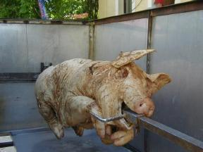

| |||
| |||
|
|
Rückblick auf das LUG-Camp 2000
 |
 |
|  |  |
LUG-Camp die erste
Das LUG-Camp 2000 fand letztes Jahr zum ersten mal statt, und zwar ebenfalls auf dem Karlshof. Oben seht ihr einen Blick auf die die ans Haupthaus anschließende Tenne. Das ist ein ziemlich großer, cooler Raum, den wir für die Vorträge und das gesamte Programm genutzt haben. Nach dem Riesenspaß von letztem Jahr ist eines sicher: Der Karlshof ist absolut LUG-Camp tauglich :-) Auf den beiden anderen Photos seht ihr das LUG-Camp Spanferkel die arme Sau und unser kulturelles Highlight Bauchtanz mit Resi und ihren Mädels.
Karlshof, Tenne, Strom und Schwarzbräu
das waren neben einem kompletten Netzwerkequipment (Danke an Biber und Robbi) und einer soliden Stromversorgung (thanx Stromi und Martin Vill) die benötigte Hardware, um das erste LUG-Camp des Jahrtausends zu starten. Als dann noch die rund 100 Besucher aus Deutschland und dem benachbarten Ausland ankamen, konnte es losgehen. An dieser Stelle ein Extragruß an unsere Gäste aus Südschweden - die Kieler. Sie waren übrigens die ersten, die sich für das kommende LUG-Camp angemeldet haben: herzlich willkommen zum LUG-Camp 2001.
Vortragsorgien, Lagerfeuer, Spanferkel bis zum Abwinken
So optimal ausgestattet konnten wir loslegen. Nach einem Kaffee zum
Wachwerden gab es dann verschiedene Vorträge
zu interessanten Themen rund um Linux. Da gab es zum Beispiel den von
Marcel Bauer vorgestellten
MOSIX-Cluster, der sogar die Hinfahrt auf der Autobahn überstanden
hat: ein echter Highspeed-Cluster eben. Es ist definitiv zu viel für
einen Rückblick hier jeden Vortrag zu erwähnen. Alle übrigen Vorträge
seht ihr hier.
Dabei dürfen allerdings die vielen Spontanvorträge
nicht unerwähnt bleiben. Da wurde über Zope diskutiert, Quake bis ins
Detail erklärt, der Linux-Tag vorgestellt. Unvergessen ist für alle die
dabei waren
sicherlich der spektakuläre Vortrag über Mastercontrol-Programmierung auf Wang- Maschinen in den 70ern. Zentral war in diesem Zusammenhang
das legendäre Programmkonstrukt while not dead gosub. Die Begeisterung des Publikums war unbeschreiblich und ans Schlafengehen war nicht
mehr zu denken: Es ist schließlich alles eine Frage der Strategie.
Bei so viel Input war man dann wirklich reif für Lagerfeuer, Schwarzbräu und Spanferkel. Überhaupt war das Catering wohl überdurchschnittlich gut. Einer der jüngeren Teilnehmer meinte "Viel besser als beim CCC-Camp. Da mußt ma immer zu Mc Donalds". Vom Spanferkel gabs mehr als genug und davon reichlich :-) Und damit sind wir wieder ganz am Anfang.
Bildarchiv
Noch mehr Bilder gibt es hier.
Alte Webseiten
Die Webseiten des LUG-Camps 2000 liegen hier.
Erstellt von joerg. Zuletzt geändert am 26.01.2002.
| LUG-Camp-Newsticker | |||||||
|
| Hauptsponsor |
| Sponsoren |
|
|
|
|
|
|
|
|
|
|
|
|
|
|

|